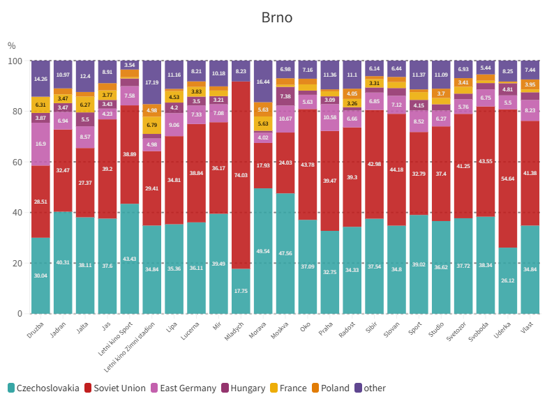
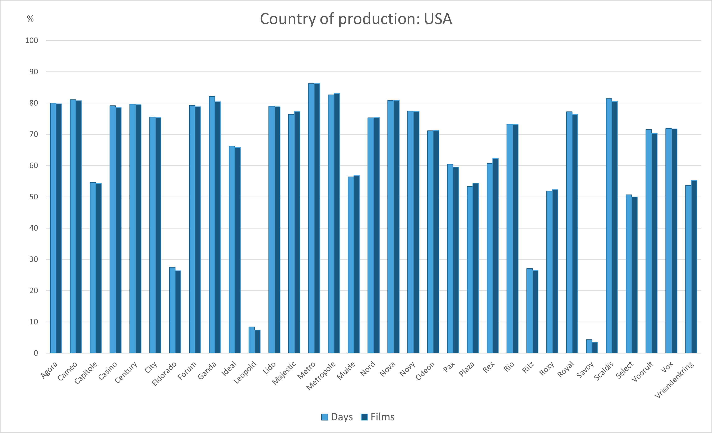

Ghent-Brno-Comparison
Welcome to the directory for the Ghent-Brno comparison project. Click on a folder to navigate and explore the data.
-

Cinemas of Brno and Ghent (1951-1953)
Click here for detailed graphs on cinema exhibition trends in Brno and Ghent, focusing on the production countries of the films they showcased.
-
 Sharing films between the ECA cities (1951-1953)
Sharing films between the ECA cities (1951-1953)Find here the comparison of Brno and Ghent within a broader context, including other European cities, as part of the European Cinema Audiences (ECA) project.
-

Exhibition strategies in Brno and Ghent (1951-1953)
Here, you can find graphs comparing screening dates and the number of films shown in Brno and Ghent cinemas, highlighting historical trends in cinema programming.
-
 Cinema exhibition network in Ghent (1951-1953)
Cinema exhibition network in Ghent (1951-1953)Click here for an interactive cinema network in Ghent to learn more about the exhibition practices on a local level in 1951-1953.
-
 Cinema exhibition network in Brno (1951-1953)
Cinema exhibition network in Brno (1951-1953)Click here for an interactive cinema network in Brno to learn more about the exhibition practices on a local level in 1951-1953.